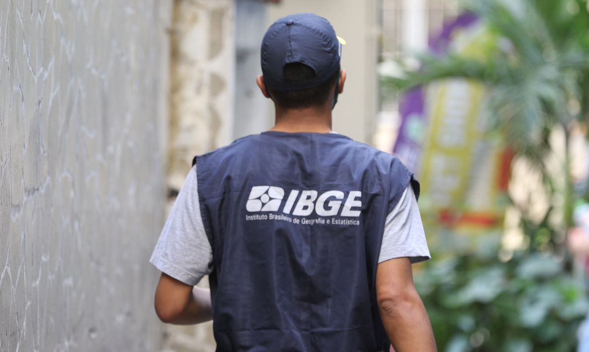

Sobre mim
Estou cursando Desenvolvimento de Sistemas Multiplataformas na FATEC de Itapira, possuo interesse em um trabalho ou estágio na área de desenvolvimento, manutenção de rede e sistemas! Meu primeiro emprego foi temporário como recenseador do município de Itapira, entrevistando os moradores para a coleta de dados para o censo do IBGE entre agosto a dezembro de 2022. Durante este período aprimorei minha comunicação e Inter personalização.
Formações Acadêmicas
Técnologo em Desenvolvimento de Sistema multiplataforma
Faculdade de Tecnologia do Estado de São Paulo – Itapira, São Paulo
Técnologo em Mecatrônica Industrial
Faculdade de Tecnologia do Estado de São Paulo – Mogi Mirim, São Paulo
Conclusão do Ensino médio
Instituto Educacional Ativa-Itapira, São Paulo - concluído em 2017;
Experiencia Profissional
Recenseador:
Entrevistando moradores do municipio para a coleta de dados, no IBGE ( agosto a dezembro de 2022),para a realização do censo de 2022
Atividades Complementares
Visitação técnica nos processos de fabricação da Eaton e da Sogefi - (2018);
Inglês intermediário, CNA - (2010-2018).
Visita técnica na TOTVS – (31 de Maio de 2022)
Hobbies

Gosto muito de jogar Video Games e ver filmes e séries e
Partico artes marcais